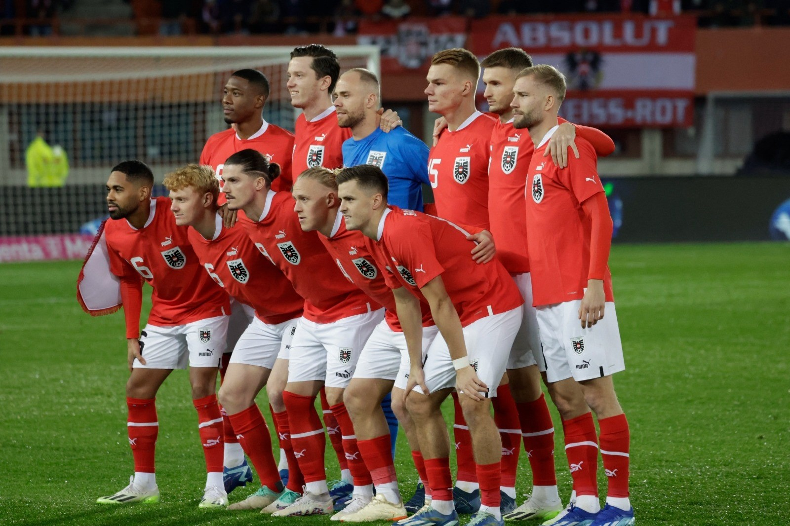
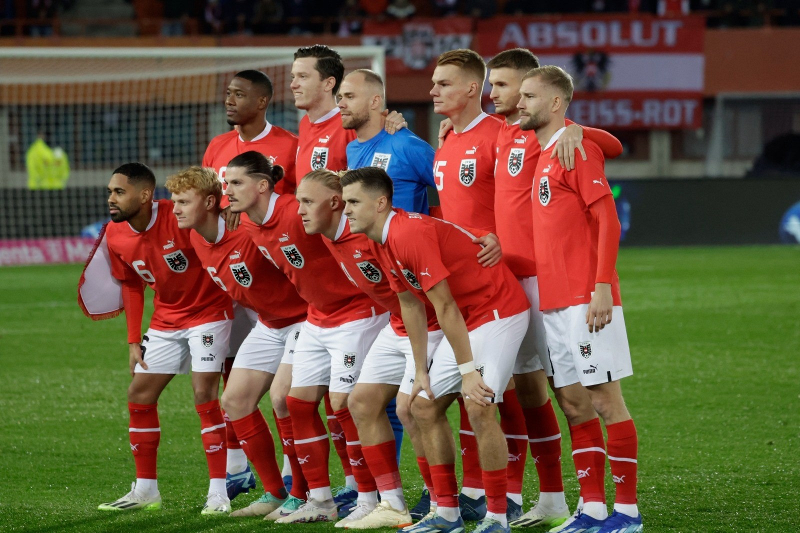

Seleção Austriaca na UEFA Eurocopa
A Áustria vem a Euro em busca de seu primeiro título, em uma fase morna, com bons jogadores em campo como o ótimo zagueiro David Alaba, o meio campista Sabitzer e o atacante Arnautovic.

A Áustria vem a Euro em busca de seu primeiro título, em uma fase morna, com bons jogadores em campo como o ótimo zagueiro David Alaba, o meio campista Sabitzer e o atacante Arnautovic.
